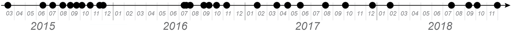
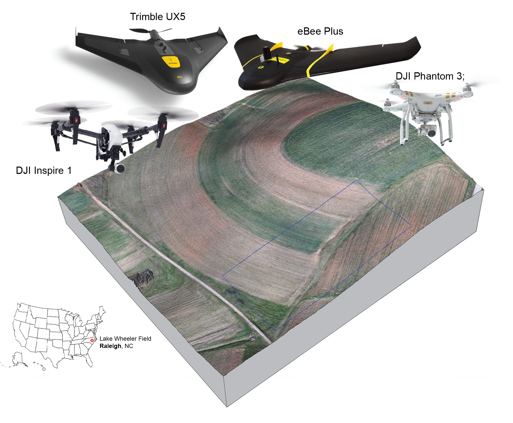
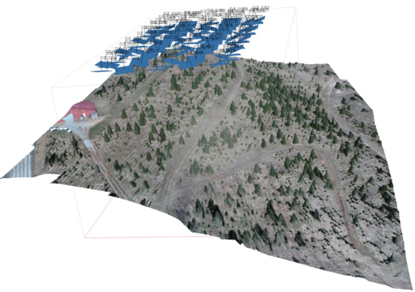
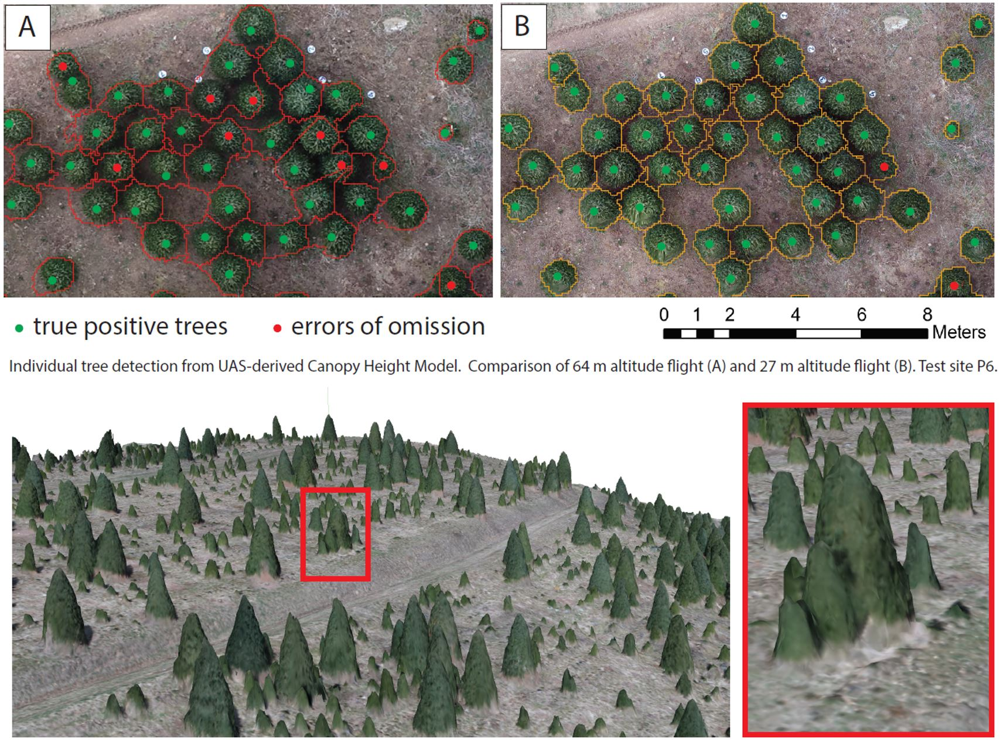
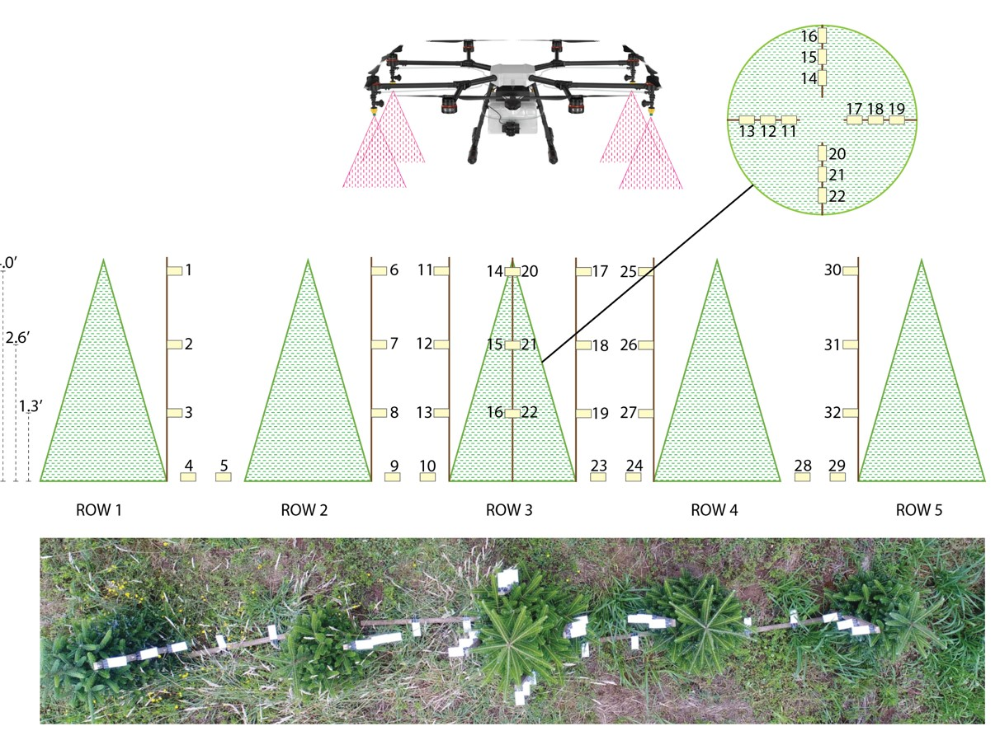
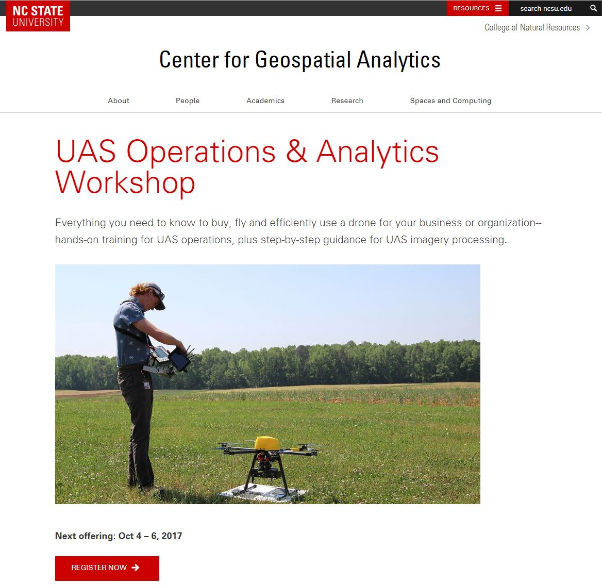

UAS in the Center for Geospatial Analytics

Timeseries


Rapid updates of the DSM
Can you spot the difference?

Rapid updates of the DSM
Can you spot the difference?

Rapid updates of the DSM

Data collected and processed by William Reckling
Challenges with rapid DSM updates

Publication: Jeziorska, J., Mitasova, H., Petrasova, A., Petras, V., Divakaran, D., Zajkowski, T. 2016: Overland flow analysis using time series of sUAS-derived elevation models. ISPRS Annals of the Photogrammetry, Remote Sensing Spatial Inform Sci.; III-8:159–66.
Flow modeling on UAS and lidar fused data
Replacing crop surface by lidar bare ground: patching creates artificial flow pattern, smooth fusion improves accuracy of flow distribution


Publication: Petrasova, A., Mitasova, H., Petras, V., Jeziorska, J. 2017: Fusion of high-resolution DEMs for water flow modeling.
Open Geospatial Data, Software and Standards 2:6.
Christmas trees farm management
Christmas trees farm management
Christmas trees farm management
Christmas trees farm management
Students' projects (UAS course)

UAS Operations and Analytics Workshop

UAS in the Center for Geospatial Analytics